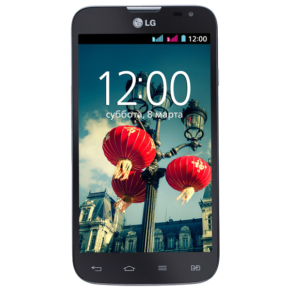

|
|
|
|---|---|
|
На основе Android 4.4.X
На основе Android 5.1.X
На основе Android 6.0.1
ResurrectionRemix 5.7.4(БУТЛУП!) На основе Android 7.X.X
На основе Android 8.1
Полезное для CyanogenMod 12.1 13.1 и других Инструкция по перемещению "не перемещаемых" приложений на адаптированную SD-карту в СМ13 Снижение энергопотребления на СМ12.1 Уменьшение энергопотребления заряда аккумулятора сервисами Google Play на СМ 11-13 Патч на улучшение звука (CM12.1) Включаем автоповорот домашнего экрана и экрана блокировки |

Характеристики устройства: Дисплей: 4.5 дюйма,IPS,480×800px Процессор: Qualcomm Snapdragon 200 MSM8610 (1.2 ГГц) Версия Android: 4.4.2 Oсновная камера: 5 Мп Фронтальная камера: 0.3Мп RAM: 1GB ROM: 4GB Аккумулятор: 2100мАч,зарядный ток 700мА Дополнительно: HSPA(3G),GSM(2G),2 SIM,поддержка карт памяти до 64GB Все TWRP RECOVERY Полезное для RR5.8.5 от Coyote67 Правильное отображение MTS UKR и Vodafone (СМ12.1) Коллекция скинов погоды для виджета cLock C-Apps Делаем устройство "сертифицированным" патч на зарядку в 1500мАч от Coyote67
|